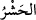
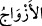

35. Çünkü onlara: Allah’tan başka tanrı yoktur, denildiği zaman kibirle
direnirlerdi.
36. «Mecnun bir şair için biz tanrılarımızı bırakacak mıyız?» derlerdi.
37. Hayır! O, gerçeği getirdi ve peygamberleri de doğruladı.
38. Kuşkusuz siz acı azâbı tadacaksınız.
39. Çekeceğiniz ceza yapmakta olduğunuzdan başka bir şeyin cezası değildir.
“Zâlimleri, onların aynı yoldaki arkadaşlarını ve Allah’tan başka tapmış oldukları
putlarını toplayın” buyuracaktır. “__WORD__ diriliş, toplanma ve sevk etme mânâlarına
gelir. Burada kastedilen ise toplanmaları ve sevk edilmeleridir; diriliş değildir. Çünkü
o gerçekleşmiştir. Zâlimlerden maksat Âdemoğullarından müşrik olanlarıdır. Şirk
koşmakla kendilerine zulmedenleri bir araya toplayın ve getirin, demektir.
“Onların aynı yoldaki arkadaşlarını... toplayın” yani putperesti putperestlerle,
yıldıza tapanları yine yıldıza tapanlarla, yahudileri yahudilerle, hıristiyanları
hıristiyanlarla, mecusileri mecusilerle ve diğer millet ve din mensuplarını da kendi
dindaşlarıyla toplayın demektir. Bu şekilde yapılması onların daha fazla üzülmeleri ve
mahcup olmaları içindir.
“Onlara” zâlimlere, onların aynı yoldaki arkadaşlarına ve mabudlarına “cehennemin
yolunu gösterin.” Ve onları cehenneme yönlendirin. Bu sözde zâlim ve kâfirlere alaylı
bir hitap yapılmıştır. Denilir ki âyetteki zâlim ifadesi, umumidir; kendi nefsine yahut
başkasına zulmeden herkesi içine alır. Buna göre zâlim de kendi yardımcısıyla
haşrolunacaktır. Şarab ehli şarab ehliyle, zina ehli zina ehliyle, faiz ehli faizciyle ve
daha diğer tüm zulüm ehli hep kendi akran ve arkadaşlarıyla haşrolcaktır.
Kûtu’l-kulûb’da der ki: Bir kimse Abdullah b. Mübârek (k.s.)’a “Ben terziyim.
Bazen zâlimler için elbise dikiyorum. Sakın ben onlara yardım edenlerden olmıyayım?”
diye sordu. İbn Mübârek: “Sen onlara yardımcı olanlardan olmak bir yana, bilakis
zâlimlerdensin. Belki o zâlimlere yardımcı olanlar sana iğne ve iplik satanlardır.” dedi.
el-Furû’da der ki sarac ve terzinin fasıkların kıyafet modellerini yapıp bundan ücret
alması mekruhtur. Zira bu, mâsiyete yardım etmektir. Nakledilir ki İmâm-ı A’zam
(rh.a.)’ı bir kere hapsetmişler. Zâlimlerden birisi gelip ona: “Bana bir kalem yont/traş
et.” dedi. İmâm-ı A’zam (rh.a.) “Hak Teâlâ’nın haklarında “Zâlimleri, onların aynı
yoldaki arkadaşlarını ve Allah’tan başka tapmış oldukları putlarını toplayın”
buyurduğu kimselerden olmaktan korkarım” dedi.
Burada “__WORD__ kelimesinden maksat, zâlimlerin kendi dinleri üzere olan eşleri de
olabilir. Yahut bu kelimeden murad, zâlimlerin şeytan dostlarıdır. Her kâfir kendi
şeytanıyla aynı zincire vurulacaktır. Yani onlara tâbi olanları, yardımcılarını, işlerinde
onlara uyan akranlarını, demektir. et-Tezkiretü’l Kurtubî’de kaydedildiğine göre bir
hadis-i şerifte “İmru’l-Kays, cehennemlik şâirlerin cehennem sancaktarıdır”[201]